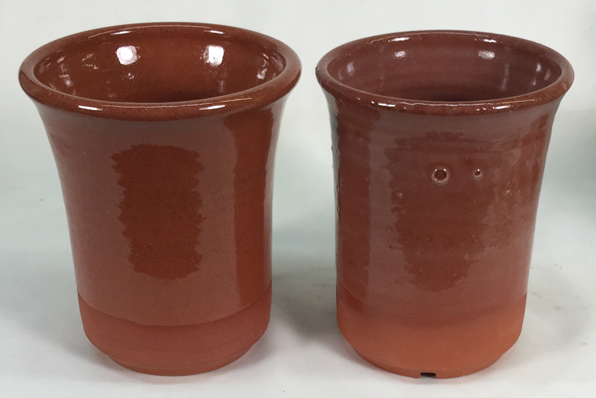
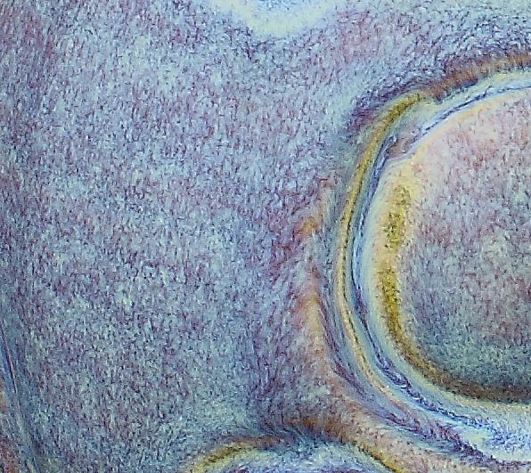
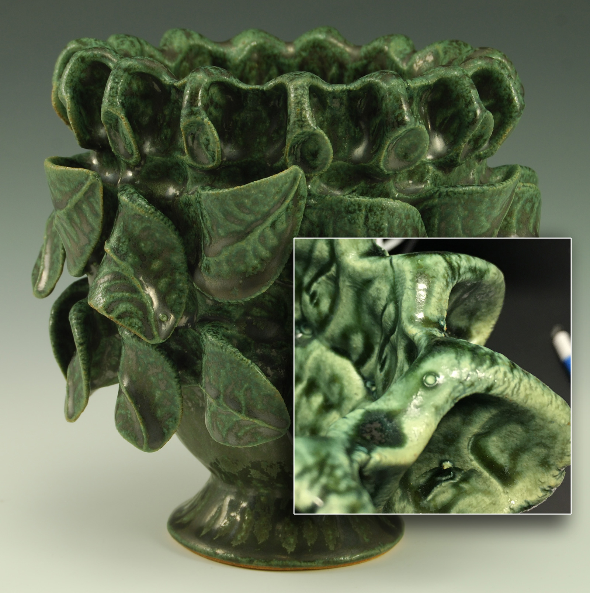
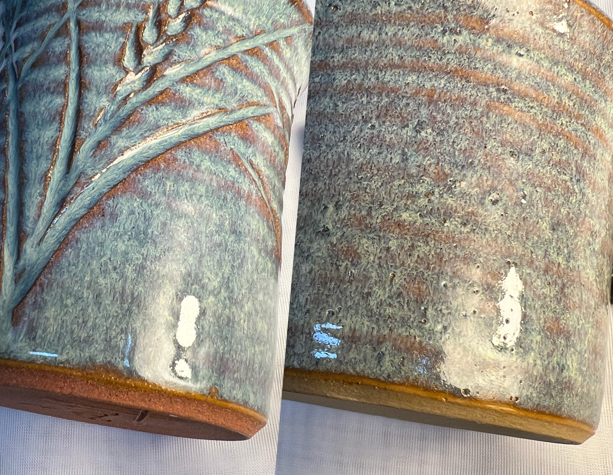
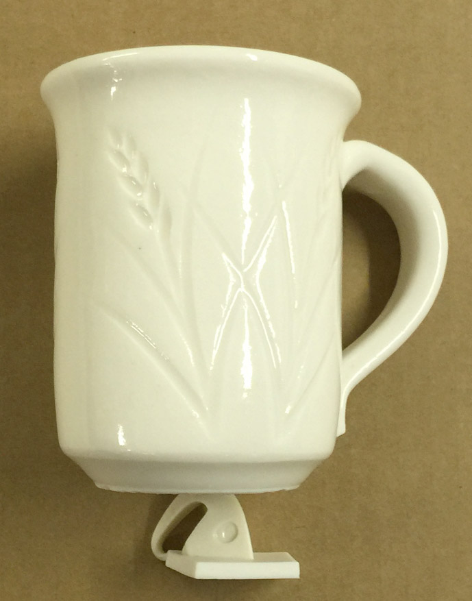
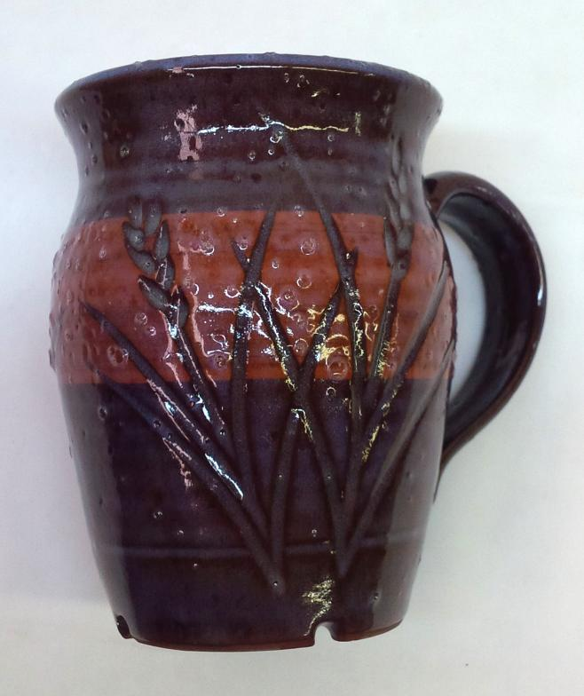
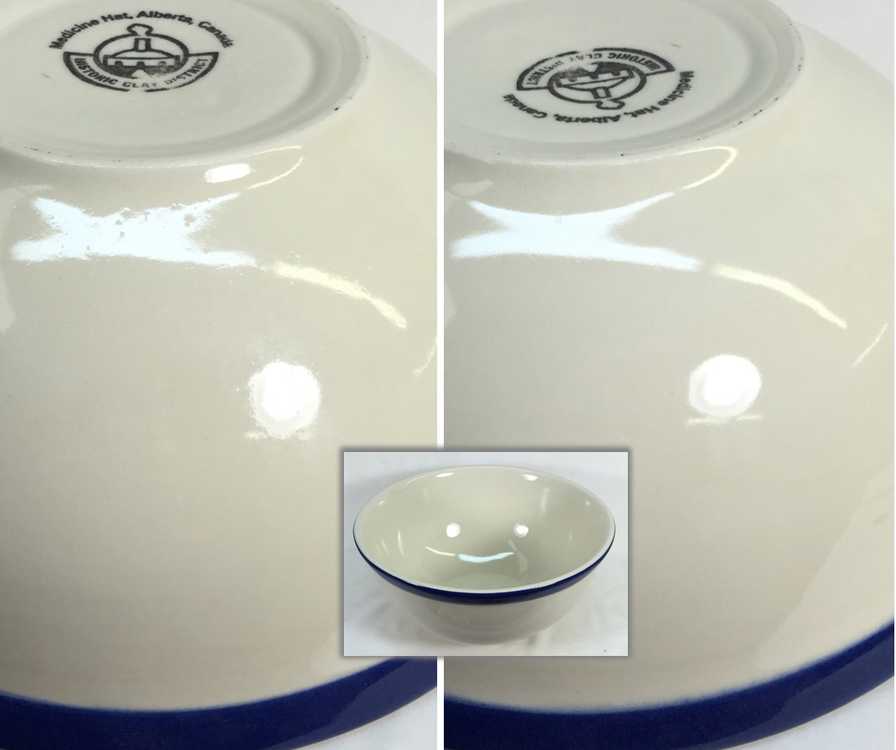
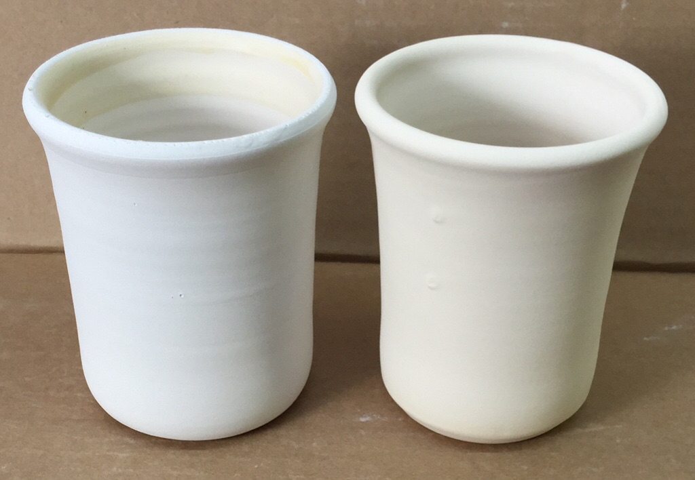

Glaze Blisters
Questions and suggestions to help you reason out the real cause of ceramic glaze blistering and bubbling problems and work out a solution
Details
Blisters are evident on the fired glaze surface as a 'moonscape' of craters, some with sharp edges and others rounded. These craters are the remnants of bubbles that have burst during final approach to temperature or early stages of cooling. In some cases, there will be some unburst bubbles with a fragile 'dome' than can be broken. Blisters can vary in size and tend to be larger where the glaze is thicker. This problem is so serious that entire production lines can shut down when it hits. Generally potters will encounter this problem much more than industrial producers (the latter use more balanced glazes and cleaner clay bodies).
Is the glaze fluid enough?
Often glazes appear like the melt should have plenty of mobility to heal but this can be deceptive. A melt flow testing regimen is the only way to know for sure about how much your glaze flows and if flow is changing over time. Melt flow testers have a reservoir at the top of a steep incline, the glaze runs down a calibrated runway. Generally, a fluid glaze will heal blisters much better, but only if it has time and if they have broken.
Is the glaze too fluid? Is the surface tension too high?
I am about to tell you something that could fix a blistering problem that has nagged you for years! It seems logical that a glaze not healing its blisters does not have enough melt fluidity. But very often, the opposite is the actual truth. How is it possible that a highly fluid melt can form blisters that do not heal? Bubbles can only form in a high-fluidity high-surface tension melt (analogous to the way bubbles form with soapy water). Reactive glazes are often of this type, those having high percentages of boron (e.g. 0.7 or more molar in a cone 6 glaze) so they melt well but at the same time having high surface tension. At the same time, such glazes often contain colorants and other materials, having high LOIs (producing a lot of gases of decomposition that become bubbles in the melt). Such glazes that form bubbles can be soaked for hours at top temperature and the bubbles may not break. If the temperature is dropping rapidly they may not break at all, and if they do at some point, what remains of the melt may not have time heal itself. This can happen even with fine porcelain bodies. Here is the key: Melt-fluid glazes need to avoid high surface tension. If that is not possible they need to be cooled to the point where the increasing viscosity of the melt is enough to overcome the surface tension that enables the bubbles to form and hold (of course that temperature is different for each glaze, it is normally found by decreasing the drop-and-hold temperature over a series of firings). This breaks the bubbles and provides enough time for the remaining melt fluidity to level out the surface. Each glaze has a different point at which this happens and ideally, cooling the kiln to just below that temperature and soaking there is the best solution. Failing that knowledge you can experiment with slow cooling the kiln through various temperature windows to discover the best results. Be aware that this temperature could be lower than you think, be prepared for it to be 200 degrees F or more below the firing temperature. Of course, if you are able to adjust the chemistry to favor fluxes that have a lower surface tension that will also help a lot. There is a linked photo below that shows how you can recognize high surface tension on a flow tester.
Are excessive gases generated during glaze fire?
Significant amounts of gases can be generated within the glaze itself due to the decomposition of some materials after melting has started (i.e. dolomite, whiting, manganese dioxide, clays, carbonate colorants, etc). Substitute these materials for others that melt cleanly. For example, use frits, supply CaO from wollastonite instead of whiting or dolomite, use cleaner clay materials, or use stains instead of metallic carbonates. If you are using organic additives be aware that some of these can generate considerable gases during decomposition; do tests without them, use an inorganic substitute or find way to disperse them better into the slurry.
You might be under estimating the amount of gases that are coming out. Are you holding the top temperature long enough? Perhaps a much longer than expected soak might be necessary (on very thick tile or sculptural pieces, for example, 24 hours might be needed). Could you do a test on a small piece to confirm this? It might also work to adjust the firing schedule to soak, decrease the temperature a little (so the glaze is still fluid enough to level) and soak it there.
Is the glaze recipe or chemistry the problem?
The approaches to dealing with glaze chemistry issues differ in fast fire (e.g. tiles) and slow fire (studio pottery). In slow fire we want glazes that are mobile and can heal imperfections over a long soaking period. In fast fire we want glazes that remain unmelted until after 950C (gases from decomposition can occur up until this temperature) and then melt quickly after this.- If you are firing fast then you need to use a fast-fire glaze formulation so the glaze does not begin to melt until after body gassing is complete (the whole modern white-ware and tile industries are built on this principle). In fast fire, matte glazes automatically have this property because the formulations to make a crystalline matte and a late melting glaze are the largely same. Glossy glazes, however require extra attention.
- Reduce zircon or alumina in the glaze melt to give it better flow properties. Or source them from a frit rather than raw materials.
- Reformulate the glaze to have more fluidity to heal imperfections (i.e. more flux or a lower alumina:silica ratio).
- Strontium carbonate can help smooth viscous zirconium glazes, small amounts of ZnO and Li2O can do miracles for glaze flow.
- Adjust the glaze so that it has a lower surface tension so that bubbles break more easily during soaking.
- Boron can induce blistering, especially if its amount is quite high (check limit/target formulas for guidance). The reasons for this phenomenon are not because of gassing (this is demonstrated by the fact that high boron glazes often blister worse on a second firing). Boron is a glass like silica and it wants to form its own glass structures. High boron can thus cause phase separation (areas of discontinuous glass chemistry in the fired glaze, e.g. globules of a sodium borate glass in a calcium silicate glass matrix). Considering the important function of alumina in glass structure, the lack thereof would be an aggravating factor in the separation. Phase boundary phenomenon and the differences in surface tension and melt fluidity of the phases could breed blisters. This process likely continues in a second firing (this accounts for blistering getting worse). Ferro Frit 3134, for example, has no alumina, lots of boron and plenty of CaO/Na2O, glazes high in it are candidates for this phase separation.
Is the system is intolerant of gases?
Gas release from decomposing materials in the body can continue until 950C. Many glazes begin melting long before this.
- In the single fire process (i.e. tile) gases have to bubble up through the glaze if it melts too early. The most important factors in producing flawless glaze results in single fire ware are a dense properly pugged or pressed clay matrix that is not too thick, the use of fast-fire glazes specially formulated to melt as late as possible, a firing curve that recognizes the need for a slower rate-of-rise at glaze finish temperatures, and a body made from clean materials and containing a minimum or organics.
- Use a body of finer particle size so that gases are channeled to more surface sites of lower volume help, individual sites do not overwhelm the glazes ability to pass them.
- Minimize techniques that roughen or remove fines from the leather hard or dry clay surface of bodies that contain coarser particles. If necessary apply a fine particled slip to leather hard or dry ware to filter internal body gases into finer bubbles during firing.
- Apply the glaze in a thinner layer to minimize its ability to contain large bubbles.
- Use clays not containing large gas generating particles (i.e. pyrites, sulphates)
- Some fluid glazes (e.g. rutile-blues) tend to be quite sensitive to blistering. This seems out-of-place since the glaze is fluid and should be able to heal imperfections. But the problem is often that they melt early, seal the body surface, and percolate escaping gases. After all gases have been generated they still have enough surface tension to support populations of unborken bubbles containing the last of them. The fast temperature drop of the kiln shut off does not provide adequate time for them to heal or even break. Experiment with firing curves to learn where to slow cool-down and give them a chance to heal when the melt is stiffer (this might be much lower than you think, e.g. 1400C for a cone six version).
Is the glaze firing part of the problem?
- Fire the glaze higher or adjust its formulation so that it melts better and more readily heals surface bubbles.
- In a slow-firing setting, you may need to soak the kiln longer at maturing temperature to give the glaze a chance to heal itself. In a fast-fire you need to do the opposite, soak only long enough to melt the glaze but not long enough to allow bubbles to grow.
- Fire the kiln slower during the approach to final temperature.
- It is not easy to understand why very fluid glazes sometimes do not heal blisters well. Sometimes they are not as fluid as they appear, do flow testing to find out. Or if they are fluid it may be possible that they need to be cooled slower through the transformation process at which they begin to stiffen and solidify; this can be hundreds of degrees lower than the actual firing temperature (if you are not using a fast-fire type glaze).
- Rather than trial and error firing tests to find a schedule that is sympathetic to your body-glaze combination have your body evaluated for TGA and DTA. Thermal Gravimetric Analysis provides information on body weight loss during the whole firing curve so it tells you when gases are being generated. Differential Thermal Analysis shows where in the firing curve the body behaves endothermically and exothermically. An expert can use information from these tests and others to tune a firing schedule perfect for your situation. In the USA The Orton Ceramic Foundation can do this type of evaluation.
Is it being fired in a gas kiln?
- Avoid very heavy reduction followed by periods of oxidation.
- It is best to start reduction one or two cones higher than the bisque temperature, this period in the glaze kiln can oxidize any remaining potential 'blister producing' volatiles that the bisque did not take care of.
- Avoid flame impingement on the ware.
- Make sure that stage one of the glaze fire is truly oxidizing to avoid buildup of internal carbon in the body.
Is the body the problem?
- Does the bare fired clay have a glassy film? Soluble salts within the body can move out to the surface during drying. If these are high in fluxing oxides they act as a very reactive intermediate layer between glaze and body. This can amplify existing pinhole contributors or produce glaze surface irregularities that are akin to pinholing. Add barium carbonate to the body mix to precipitate the solubles within the body or substitute implicated materials in the body batch.
- Is the ware being dried too slowly after glazing? In industry great care is taken to accelerate drying to minimize dissolution of compounds by the water from the glaze (and to minimize issues with glaze adherence that extended drying times can raise). Compounds that can cause blistering are thus trapped inside the body.
- Use a body that generates less gases of decomposition. For example, the tile industry uses low lignite ball clays both to enable fast fire and to get better glaze surfaces. Clean ball clays (those with low carbon) can be surprisingly light in color, some resembling kaolins (i.e. Spinks Champion ball clay).
- Does the body contain barium carbonate particles? Screen a sample on a 200 mesh sieve. Does it contain non-white particles or unground barium? Contaminated barium can cause severe pinholing.
- Is the body too dense to enable the gases to freely escape during the period before the glaze melts
- Blisters and pinholes can share the same causes. Check the article on pinholing for more information on body problems that can cause glaze defects.
Is the problem in the glaze mixing?
- Most companies ball mill their glazes and for good reason. It is not uncommon to mill glazes up to 12 hours. Blisters and surface imperfections are often caused by impurity particles in the glaze layer itself, grinding these down as small as possible will minimize the ability of individual ones to cause problems. Don't assume your ball mill is working, some configurations will not grind a glaze fine enough no matter how long they run.
- A variety of contaminants can find their way into glazes and certain materials are potent sources of bubbles (e.g. plaster). Silicon carbide is an example, if you are doing any cutting or grinding using an SiC abrasive particles could be finding their way into your process (you might consider using alumina based abrasives).
Is the problem glaze application?
- Have you changed the way glaze is applied? Have you changed employees doing the glazing? Do you have a quality control mechanism to record aspects of the glaze lay down (e.g. thickness, density, microscopy, resistance to rub-off/dusting). A thicker glaze application is, of course, much more likely to blister.
- Many companies target very high specific gravities in their glazes (i.e. 1.8) to achieve a dense laydown (your application method may limit this). This minimizes entrained air and thus imperfections. Certain application techniques produce a better laydown, others produce a fluffier layer (e.g. spraying). If this is your case, think about ways to densify the dry layer.
- Do not put wet ware into the kiln, a variety of problems related to the nature of glaze laydown can result. It is surprising how high the temperature can get and yet steam still be present inside kilns without ventilation.
Are you bisque firing? Is it done right?
All clays release gases from burning of carbon material and decomposition of other compounds. Some clays release sulphur compounds also. If the glaze is melting during release of these gases, they must bubble up through it. If the melt is stiff, the kiln is ramped up too quickly, cooled too rapidly, or the glaze melts too early, it will not have opportunity to heal properly.
- Make sure the bisque fire has good ventilation, has a clean oxidizing atmosphere, is long enough, and that ware is stacked to expose maximum surface to oxidation. Tightly packed electric kilns lacking a venting system require extremely slow and thorough firing (especially through the red heat to 900C range). The superior ventilation in gas kilns makes them best for bisque firing. However, it is important to realize that heavy ware fired in a large electric kiln cannot be fired evenly, no matter how long it is soaked. This is because the element side will always deliver more heat work than the shady side. To appreciate this fully, go outside on a hot day, step into the sun, then into the shade!
- Bisque fire as hot as is practical (cone 04-02) and vindicate bisque temperature with standard cones. A hot bisque is necessary to burn out any sulfur that might be present. A hotter bisque means denser ware and it may be necessary to adjust glazes to be thixotropic so they will apply well to the less absorbent body. Although you may not be accustomed to glazes that will stick to less absorbent bodies, be assured that this is very feasible. One caution however: If you ware is burnished, it is not usually advisable to bisque above cone 08 or the burnish can be lost.
- Bisque fire as slow as is practical. Slow fire through the period where the most gases are generated from the oxidation of organics in the body (usually from 700C to 950C). 50C per hour is considered 'slow' If you have an electronic kiln controller experiment using a fast firing curve slowed down at various temperature ranges. This will help you determine the range at which it is most critical to fire slower. Make sure that reduction does not occur during any phase of bisque or reduced iron (FeO) could play havoc with latter stages of the firing).
- If you do not have humidity drying equipment, candle periodic kilns overnight before bisque firing the next day. This will assure that ware is completely dry and that firing can proceed quickly to past red heat, leaving more time for the carbon burnout phase.
Do blisters get worse even if you fire ware again?
This may be a vindication of suspicions that a highly fluid melt of high surface tension is supporting bubble formation and existence. On the second firing the melt will be even more fluid than the first. It is doubly important that you identify the on-the-way-down temperature at which the glaze melt is too viscous to support stretching a bubble but fluid enough to still level out. When you find it, soak the kiln there.
Related Information
Glaze blisters are a surface defect in fired ceramic glazes.

This picture has its own page with more detail, click here to see it.
The blisters trace their origins to the generation of gases as particles in the body and glaze itself decompose during firing (losing H2O, CO, CO2, SO2, etc). If the glaze melt has sufficiently high surface tension these bubbles can grow quite large (even if the melt is quite fluid). Many mineral particles gas when heated, each has its own thermal history (temperatures at which it releases gases). If a glaze has already begun melting while gases are still being generated, bubbles can grow within (this glaze is an example, it is high in Gerstley Borate). Bubble populations and distributions of sizes depend on properties of the glaze melt (e.g. viscosity, surface tension, thickness of application). As populations and sizes of bubbles increase they break at the surface. Bodies often generate gases during early stages of firing (to expel water and carbon). This tapers off but can begin again at higher temperatures if any mineral particles present are late gassers.
Strategies to deal with the problem often involve minimizing gas expulsion by adjusting body and glaze recipes to favour materials of lower LOI or earlier gassing. Lowering the surface tension of the melt is another option. Employing glaze fluxes that melt later in the firing can be very effective since pretty well all gases of decomposition will have been expelled. Glaze thickness can be reduced. Firing curves can be adjusted to slow the rate of rise as the top of the curve approaches. Holding at temperatures on the up-ramp can give gases more time to escape. Holding at top temperature can help if the surface tension is low enough. If not, the bubbles will just stay, and grow. In these cases, drop-and-hold firing schedules will often remove the blisters (giving them a chance to heal because the increased viscosity of the glaze melt can overcome the surface tension holding the bubbles in place). Testing is required to determine how much the drop should be (e.g. 100F).
LOI horse race with surprising winners

This picture has its own page with more detail, click here to see it.
This chart compares the decompositional off-gassing (% weight Loss on Ignition) behavior of six glaze materials as they are heated through the range 500-1700F. It is amazing how much weight some can lose on firing - for example, 100 grams of calcium carbonate generates 45 grams of CO2! This chart is a reminder that some late gassers overlap early melters. That is a problem. The LOI of these materials can affect glazes (causing bubbles, blisters, pinholes, crawling). Talc is an example: It is not finished gassing until 1650F, yet many fritted glazes have already begun melting by then. Even Gerstley Borate, a raw material, begins to melt while talc is barely finished gassing. Dolomite and calcium carbonate Other materials also create gases as they decompose during glaze melting (e.g. clays, carbonates, dioxides).
Rutile blue reactive glazes often do not refire well

This picture has its own page with more detail, click here to see it.
Rutile blue glazes are difficult, blistering and pinholing are very common. You must get it right on the first firing because pinholes and blisters will likely invade on the second. On the second firing the melt fluidity increases, the glaze runs and creates thicker sections in which the bubbles percolate and just do not heal well during cooling (even if it is slow). When finishing leather hard or dried ware do not disturb thrown surfaces any more than necessary. Make sure that ware is dry before the glaze firing. Do not put the glaze on too thick. Limit the melt fluidity (so it does not pool too thickly in any section). Do not fire too high. Drop and hold firing schedules can help a lot (coupled with a slow cool if needed).
Perfect storm to create massive bubbling in a low fire kiln

This picture has its own page with more detail, click here to see it.
The clay is terra cotta. It is volatile between 04 and 02, becoming dramatically more dense and darker colored. The electronic controller was set for cone 03, but it has fired flat (right-most cone), that means the kiln went to 02 or higher. At 02 the body has around 1% porosity, pushing into the range where the terra cotta begins to decompose (which means lots of gas expulsion). The outsides of some pieces blistered badly while the insides were perfect (because they got the extra radiant heat). The firing was slow, seven hours. Too long, better to make sure ware is dry and fire fast. Another problem: The potter was in a rush and the pieces were not dry. These factors taken together spelled disaster.
A runny glaze is blistering on the inside of a large bowl

This picture has its own page with more detail, click here to see it.
This rutile glaze is running down on the inside, so it has a high melt fluidity. "High melt fluidity" is another way of saying that it is being overfired to get the visual effect. It is percolating at top temperature (during the temperature-hold period), forming bubbles. There is enough surface tension to maintain them for as long as the temperature is held. To break the bubbles and heal up after them the kiln needs to be cooled to a point where decreasing melt fluidity can overcome the surface tension. Where is that? Only experimentation will demonstrate, try dropping a little more (e.g. 25 degrees) over a series of firings to find a sweet spot. The hold temperature needs to be high enough that the glaze is still fluid enough to run in and heal the residual craters. A typical drop temperature is 100F.
Refiring a terra cotta mug that had already bubbled only made blistering worse

This picture has its own page with more detail, click here to see it.
Plus the glaze ran even more. The main problem was that the original firing was taken too high, about cone 02 (seven hour schedule). This body nears zero porosity there and is beginning to decompose. That generates gases. The second firing was taken to cone 03 in four hours. But the glaze just percolated more. However freshly glazed bisque ware in that same firing came out perfect. Lessons were learned. Fire faster. Keep it cone 03 or lower. Do not put the glaze on too thick. Use self-supporting cones to verify the electronic controller, they are much more accurate than regular cones.
The difference that caused blistering: Firing schedule!

This picture has its own page with more detail, click here to see it.
These are the same glaze, same thickness, Ulexite-based G2931B glaze, fired to cone 03 on a terra cotta body. The one on the right was fired from 1850F to 1950F at 100F/hr, then soaked 15 minutes and shut off. The problem is surface tension. Like soapy water, when this glaze reaches cone 03 the melt is quite fluid. Since there is decomposition happening within the body, gases being generated vent out through surface pores and blow bubbles. I could soak at cone 03 as long as I wanted and the bubbles would just sit there. The one on the left was fired to 100F below cone 03, soaked half an hour (to clear micro-bubble clouds), then at 108F/hr to cone 03 and soaked 30 minutes, then control-cooled at 108F/hr to 1500F. During this cool, at some point well below cone 03, the increasing viscosity of the melt becomes sufficient to overcome the surface tension and break the bubbles. If that point is not traversed too quickly, the glaze has a chance to smooth out (using whatever remaining fluidity the melt has). Ideally I should identify exactly where that is and soak there for a while.
Rutile blue glazes: Love the look, hate the trouble to make it

This picture has its own page with more detail, click here to see it.
A closeup of a cone 10R rutile blue (it is highlighted in the video: A Broken Glaze Meets Insight-Live and a Magic Material). Beautiful glazes like this, especially rutile blues, often have serious issues (like blistering, crazing), but they can be fixed.
White spots and blisters in a high zircon glaze at cone 6

This picture has its own page with more detail, click here to see it.
This is also a common problem at low fire on earthenware clay (but can also appear on a buff stonewares). Those white spots you see on the beetle also cover the entire glaze surface (although not visible). They are sites of gas escaping (from particles decomposing in the body). The spots likely percolate during soaking at top temperate. Some of them, notably on the almost vertical inner walls of this bowl, having not smoothed over during cool down.
What can you do? Use the highest possible bisque temperature, even cone 02 (make the glaze thixotropic so it will hang on to the denser body, see the link below about this). Adjust the glaze chemistry to melt later after gassing has finished (more zinc, less boron). Apply a thinner glaze layer (more thixotropy and lower specific gravity will enable a more even coverage with less thickness). Instead of soaking at temperature, drop 100 degrees and soak there instead (gassing is much less and the increasing viscosity of the melt overcomes the surface tension). Use a body not having any large particles that decompose (and gas) on firing. Use cones to verify the temperature your electronic controller reports.
The perfect storm of high surface tension and high LOI: Blisters.

This picture has its own page with more detail, click here to see it.
An example of how calcium carbonate can cause blistering as it decomposes during a fast firing in our electric kiln. This is a cone 6 borosilicate glaze with 15% calcium carbonate added (there is no blistering without it). Calcium carbonate has a very high loss on ignition (LOI), and for this early-melting glaze, the gases of its decomposition are still escaping after melting begins. Another factor is also involved: Although the glaze has good melt fluidity, bubbles survived till near the end of the firing, resisting rupture (likely because of the high surface tension of the melt). When the bubbles finally did burst, there was inadequate time for healing to occur.
Blisters in a highly melt-fluid cone 6 sculpture glaze

This picture has its own page with more detail, click here to see it.
Why are these happening (on this piece by Paul Briggs)? It is not completely clear. The glaze has plenty of carbonates, including copper, enough for over 20% LOI. But these normally produce high populations of small blisters, this is the opposite. The melt appears to have enough surface tension that the bubbles survive and endure top-temperature-soaking. And they don't pop until the temperature has dropped so far that insufficient melt-mobility remains to heal them. The glaze has an unconventionally low SiO2 content, that makes it flow vigorously, well enough that the melt is moving and collecting in surface contours. The glaze recipe is quite unconventional, any effort to "improve" its adherence to limits would likely lose the visual aesthetic. A drop-and-hold firing schedule is likely the key to alleviating this.
Blistering in a cone 6 white variegated glaze. Why?

This picture has its own page with more detail, click here to see it.
This glaze creates the opaque-with-clear effect shown (at cone 7R) because it has a highly fluid melt that thins it on contours. It is over fired. On purpose. That comes with consequences. Look at the recipe, it has no clay at all! Clay supplies Al2O3 to glaze melts, it stabilizes it against running off the ware (this glaze is sourcing some Al2O3 from the feldspar, but not enough). That is why 99% of studio glazes contain clay (both to suspend the slurry and stabilize the melt). Clay could likely be added to this to increase the Al2O3 enough so the blisters would be less likely (it would be at the cost of some aesthetics, but likely a compromise is possible). There is another solution: A drop-and-soak firing. See the link below to learn more. One more observation: Look how high the LOI is. Couple that with the high boron, which melts it early, and you have a fluid glaze melt resembling an Aero chocolate bar!
What can you do using glaze chemistry? More than you think!

This picture has its own page with more detail, click here to see it.
There is a direct relationship between the way ceramic glazes fire and their chemistry. These green panels in my Insight-live account compare two glaze recipes: A glossy and matte. Grasping their simple chemistry mechanisms is a first step to getting control of your glazes. To fixing problems like crazing, blistering, pinholing, settling, gelling, clouding, leaching, crawling, marking, scratching, powdering. To substituting frits or incorporating available, better or cheaper materials while maintaining the same chemistry. To adjusting melting temperature, gloss, surface character, color. And identifying weaknesses in glazes to avoid problems. And to creating and optimizing base glazes to work with difficult colors or stains and for special effects dependent on opacification, crystallization or variegation. And even to creating glazes from scratch and using your own native materials in the highest possible percentage.
Blistering in a high gloss cone 6 glaze fired at cone 7R

This picture has its own page with more detail, click here to see it.
The boron and zinc fluxes make the melt of this glaze highly fluid at cone 7R. That comes with consequences. Notice the Al2O3 and SiO2 in the calculated chemistry. They are at cone 04 levels. The significant ZnO increases surface tension of the melt, this helps bubbles form at the surface (like soap in water). Al2O3 and SiO2 could be added (via more clay), this would stiffen the melt so the large bubbles would be less likely to form (this glaze melts so well that it could accept significantly more clay without loss in gloss). A drop-and-soak firing is another option, in this case a drop of more than 100C might be needed (see the link below to learn more).
Carbonate gassing can cause glaze blisters

This picture has its own page with more detail, click here to see it.
An example of how a carbonate can cause blistering. Carbonates produce gases during decomposition. This glaze (G2415B) contains 10% lithium carbonate, which likely pushes the initial melting temperature down toward the most active decomposition temperatures.
Coarse body fires with smoother glaze

This picture has its own page with more detail, click here to see it.
On the left is Plainsman M332, a sandy and coarse body dry ground at 42 mesh. On the right on a wet-processed body, sieved at 80 mesh and then filter pressed - it is porcelain smooth. Yet that glaze, GA6-C, on the smooth body is covered with blister remnants while the same glaze on the coarse body is glassy smooth (they were in the same firing). That smooth glaze is courtesy of the C6DHSC slow cool firing schedule. But why does it perform so poorly on the finer body? That body is being overfired. Pieces are warping. Although not bloating, it is beginning to decompose and generate gases, they are producing the blisters.
Why are rutile blue glazes susceptible to blistering?

This picture has its own page with more detail, click here to see it.
This blistering problem is common in rutile blue glazes, especially high-temperature - this is not saleable. The reason relates to what it takes to create this kind of vibrant variegated aesthetic: Melting the crap out of the glaze and cooling it just right. This particular one is being fired to cone 11 down to get enough melt fluidity to make it crystallize and phase separate. It seems logical that if the glaze is melting so well it should be able to heal any bubbles that form and break (these are more than usual because the body is being overfired and generating gases). However, the fluidity comes with surface tension that can hold the bubbles intact. Each of these holes in the glaze is a product of that - plus another factor: Cooldown is rapid enough that the melt is not sufficiently fluid to heal after bubble breakage. The potter has been using this glaze for many years with success, but a small change in process or materials has occurred to push it past a tipping point. Solutions? A drop and hold firing. Add a flux (e.g. a little lithium or a frit) to make it melt fluid at cone 10R (where the body generates less gasses of decomposition). Replace any high LOI materials in the glaze itself with other materials to source the same oxides.
Example of the blisters from Barium Carbonate decomposition

This picture has its own page with more detail, click here to see it.
This is a combination dolomite/barium matte. It has been fired at cone 10 reduction. It contains 17% barium carbonate and 17% dolomite (in a nepheline syenite base). Most carbonates decompose and gas off the CO2 well before the glaze melts, but not barium carbonate. It can turn the glaze matrix into an "aero chocolate bar" of bubbles. The glaze melt viscosity of some glazes, like this one, makes them vulnerable to preserving the bubbles as dimples or sharp-edged holes.
This is when you should program a firing yourself

This picture has its own page with more detail, click here to see it.
This is Polar Ice cone 6 porcelain that has been over fired. The electric kiln was set to do its standard cone 6 fast fire schedule, but a cone in the kiln demonstrates that it fired much higher (perhaps to cone 7 judging by the bend on the cone). This is a translucent frit-fluxed porcelain that demands accurate firing, the over fire has produced tiny bubbles and surface dimples in the glaze. The mug rim has also warped to oval shape. The lesson: If you are firing ware that is sensitive to schedule or temperature, use large cones and adjust if needed. If it fires too hot like this, then program to fire to cone 5 with a longer soak, or cone 5.5 (if possible). Or, program all the steps yourself; that is definitely our preference.
How we fixed this case of serious blistering

This picture has its own page with more detail, click here to see it.
An extreme example of blistering in a piece fired at cone 03. The glaze is Ferro Frits 3195 and 3110 with 15% ball clay applied to a bisque piece. Is LOI the issue? No, this glaze has a low LOI. Low bisque? No, it was bisqued at cone 04. Thick glaze layer? Yes, partly. Holding the firing longer at temperature? No, I could hold this all night and the glaze would just percolate the whole time. Slow cooling? Close, but not quite. The secret I found to fix this was to apply the glaze in a thinner layer and drop-and-hold the temperature for 30 minutes at 100F below cone 03. Doing that increased the viscosity of the glaze melt to the point that it could break the blisters (held by surface tension) while still being fluid enough to smooth out the surface.
Can this 5 lb thick walled bowl be fired evenly in an electric kiln. No.

This picture has its own page with more detail, click here to see it.
When electric kilns, especially large ones are tightly packed with heavy ware, the shady or undersides of the pots simply will never reach the temperature of the element side, no matter how long you soak. In this example, the inside of this clear glazed cone 6 bowl has a flawless surface. The base is pinholed and crawling a little and the surface of one side (the shady side), the remnants of healing disruptions in the melt (from escaping gases) have not smoothed over. The element side is largely flawless like the inside, however it is not as smooth on the area immediately outside the foot (because this is less element-facing). Industrial gas kilns have draft and subject ware to heat-work by convection, so all sides are much more evenly matured.
Can you bisque fire at cone 02? Yes. But why? How?

This picture has its own page with more detail, click here to see it.
The buff stoneware mug on the right was bisque fired at cone 02, the one on the left at cone 06. The cone 02 mug was immersed in the clear glaze for 1 second and allowed to dry. The other was glazed on the inside first, allowed to dry, then glazed on the outside with a 1 second dip. Of course, the cone 02 one took longer to dry. In spite of this, the glaze is thicker and more even on the one bisque fired to cone 02. How is the possible? The secret is the thixotropy of the glaze. When that is right, a one second dip will give the same thickness and evenness whether dry or bisque, 06 or 02. Why bisque fire to cone 02? To get a glazed surface free of pinholes on some stoneware clays.
Orange-peel or pebbly glaze surface. Why?

This picture has its own page with more detail, click here to see it.
This is a cone 10 glossy glaze. It has the chemistry that suggests it should be crystal clear and smooth. But there are multiple issues with the materials supplying that chemistry: Strontium carbonate, talc and calcium carbonate. Each has a significant LOI and produces gases decomposition. When the gases need to come out at the wrong time it turns the glaze into a Swiss cheeze of micro-bubbles. A study to isolate which of these three materials is the problem might make it possible to adjust the firing to accommodate it. But probably not. The most obvious solution is to just use non-gassing sources MgO, SrO, CaO and BaO (which will require some calculation). There is a good reason to do this: The glaze contains some boron frit, that is likely kick-starting melting much earlier than a standard raw-material-only cone 10 glaze. That fluid melt may not only be trapping gases from the body but creating a perfect environment to trap all the bubbles coming out of those carbonates and talc. All of this being said, a drop and hold firing schedule could also smooth it out a lot.
These two transparent glazes are opposites:
In melt fluidity and surface tension

This picture has its own page with more detail, click here to see it.
This cone 04 flow tester compares two commercial low-fire transparent glazes. Their different chemistry strategies are revealed by the shape of these melt flows. While 3825B appears to have the higher melt fluidity, it also has much higher melt surface tension. This is evident in the narrow, rope-like stream and the way the flow meets the runway at a high angle before pulling into a rounded bead. A, by contrast, spreads and wets the runway, meandering downward in a broad, flat and relatively bubble-free river.
This difference is important in low-fire ware because these glazes must pass far more gases and bubbles than high-temperature glazes. The lower surface tension of A aids bubble release and healing after bubbles break. A is Amaco LG-10. B is Crysanthos SG213 (Spectrum 700 behaves similarly, although flowing less). Both approaches have advantages and disadvantages and are worth testing in your application.
Cone 6 glazes can seal the surface surprisingly early - melt flow balls reveal it

This picture has its own page with more detail, click here to see it.
These are 10 gram balls of four different common cone 6 clear glazes fired to 1800F (bisque temperature). How dense are they? I measured the porosity (by weighing, soaking, weighing again): G2934 cone 6 matte - 21%. G2926B cone 6 glossy - 0%. G2916F cone 6 glossy - 8%. G1215U cone 6 low expansion glossy - 2%. The implications: G2926B is already sealing the surface at 1800F. If the gases of decomposing organics in the body have not been fully expelled, how are they going to get through it? Pressure will build and as soon as the glaze is fluid enough, they will enter it en masse. Or, they will concentrate at discontinuities and defects in the surface and create pinholes and blisters. Clearly, ware needs to be bisque fired higher than 1800F.
Links
| Materials |
Fluorspar
|
| Troubles |
Glaze Pinholes, Pitting
Analyze the causes of ceramic glaze pinholing and pitting so your fix is dealing with the real issues, not a symptom. |
| Projects |
Minerals
|
| Articles |
Ceramic Glazes Today
Todd Barson of Ferro Corp. overviews the glaze formulations being using in various ceramics industry sectors. He discusses fast fire, glaze materials, development and trouble shooting. |
| Glossary |
Melt Fluidity
Ceramic glazes melt and flow according to their chemistry, particle size and mineralogy. Observing and measuring the nature and amount of flow is important in understanding them. |
| Glossary |
Surface Tension
In ceramics, surface tension is discussed in two contexts: The glaze melt and the glaze suspension. In both, the quality of the glaze surface is impacted. |
| Glossary |
Glaze Blisters
Blistering is a common surface defect that occurs with ceramic glazes. The problem emerges from the kiln and can occur erratically in production. And be difficult to solve. |
| Glossary |
Ceramic Glaze Defects
Ceramic glaze defects include things like pinholes, blisters, crazing, shivering, leaching, crawling, cutlery marking, clouding and color problems. |
| Media |
A Broken Glaze Meets Insight-Live and a Magic Material
Use Insight-Live.com to do major surgery on a feldspar saturated cone 10R glaze recipe with multiple issues: blistering, pinholing, crazing, settling, dusting and possibly leaching! |
| Media |
Manually program your kiln or suffer glaze defects!
To do a drop-and-hold firing you must manually program your kiln controller. It is the secret to surfaces without pinholes and blisters. |
| Firing Schedules |
Cone 6 Drop-and-Soak Firing Schedule
350F/hr to 2100F, 108/hr to 2200, hold 10 minutes, freefall to 2100, hold 30 minutes, free fall |
 PayPal | No tracking, No ads, No paywall, No transient content! Just organized, concise information constantly updated and improved. Was this helpful? Consider supporting me. |
| By Tony Hansen Follow me on        |  |
Got a Question?
Buy me a coffee and we can talk 

https://digitalfire.com, All Rights Reserved
Privacy Policy